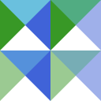
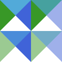

Color Space Dependence
Supported blend modes
The behavior of blending depend on the color space (or color model), though the default behavior follows the W3C's definition.
The following table shows the blend modes and their definitions supported by each color type.
| blend mode | Gray | RGB | Lab/Luv | HSV/HSL/HSI |
|---|---|---|---|---|
| normal | W3C | W3C | W3C | W3C |
| multiply | W3C | W3C | PS-Lab | |
| screen | W3C | W3C | PS-Lab | |
| overlay | W3C | W3C | PS-Lab | |
| darken | W3C | W3C | ||
| lighten | W3C | W3C | ||
| color-dodge | W3C | W3C | ||
| color-burn | W3C | W3C | ||
| hard-light | W3C | W3C | PS-Lab | |
| soft-light | W3C | W3C | PS-Lab | |
| difference | W3C | W3C | ||
| exclusion | W3C | W3C | ||
| hue | W3C | PS-Lab | HSx | |
| saturation | W3C | PS-Lab | HSx | |
| color | W3C | PS-Lab | HSx | |
| luminosity | W3C | PS-Lab | HSx |
The abbreviations in the table mean the definitions of the blending used:
- W3C:
- PS-Lab:
- the Lab color mode of Adobe Photoshop
- HSx:
- Hue-Saturation-{Value/Lightness/Intensity} as Hue-Saturation-"Luminosity"
The color types not shown above and the modes with blank are not officially supported. Note that even unsupported modes do not explicitly raise errors. For example, XYZ type is calculated in the same way as RGB type, but since XYZ values can be greater than 1, and the blend function does not clip the input colors, the validity of the results is not guaranteed.
Hue interpolation
There are two ways to interpolate the two angles: clockwise and counterclockwise. For the hue interpolation, ColorBlendModes uses the way with the smaller angle between the two hues. Therefore, HSV, HSL and HSI colors do not have the associative property even in the simple alpha compositing (i.e. using BlendNormal and CompositeSourceOver).
julia> blend(HSV(30, 0.5, 0.5), HSV(350, 0.5, 0.5), opacity=0.5) # hue != 190
HSV{Float64}(10.0,0.5,0.5)
julia> c1, c2, c3 = HSL(0, 1, .8), HSLA(120, 1, .8, .5), HSLA(240, 1, .8, .5);
julia> blend(blend(c1, c2), c3)
HSL{Float64}(150.0,1.0,0.8)
julia> blend(c1, blend(c2, c3))
HSL{Float64}(240.0,1.0,0.8)In addition, in the case of blending a gray, i.e., a color with zero saturation, and a non-gray, the hue of the non-gray color is used.
julia> for w in 0.0:0.2:1.0 # gray to yellow green, not via brown
println(blend(HSI(12.3, 0.0, 0.5), HSI(78.9, 1.0, 0.5), opacity=w))
end
HSI{Float64}(78.9,0.0,0.5)
HSI{Float64}(78.9,0.2,0.5)
HSI{Float64}(78.9,0.4,0.5)
HSI{Float64}(78.9,0.6,0.5)
HSI{Float64}(78.9,0.8,0.5)
HSI{Float64}(78.9,1.0,0.5)Gamma correction
The blend function blends colors in a "uniform" space. Note that this does not mean it blends in the linear RGB space. In other words, the blend function does not care about the gamma.
If you want to blend RGB colors in the linear RGB space and to use the sRGB input/output, you should manually correct the gamma as follows:
using ColorTypes, ColorBlendModes
image_green = load("green.png") # in sRGB space
image_blue = load("blue.png") # in sRGB space
# Note that the following are not the exact sRGB gamma calculations.
to_linear(c::TransparentRGB) =
typeof(c)(red(c)^2.2, green(c)^2.2, blue(c)^2.2, alpha(c))
to_srgb(c::TransparentRGB) =
typeof(c)(red(c)^0.4545, green(c)^0.4545, blue(c)^0.4545, alpha(c))
blend_linear(c1, c2; mode=BlendNormal) =
to_srgb(blend(to_linear(c1), to_linear(c2), mode=mode))
out_srgb = blend.(image_blue, image_green, mode=BlendScreen) # the result is in sRGB
out = blend_linear.(image_blue, image_green, mode=BlendScreen) # the result is in sRGB| space | Result | SVG |
|---|---|---|
| sRGB |  |  |
| linear RGB |  |  |
Some graphics software also applies the gamma correction to alpha channels as grayscale images.